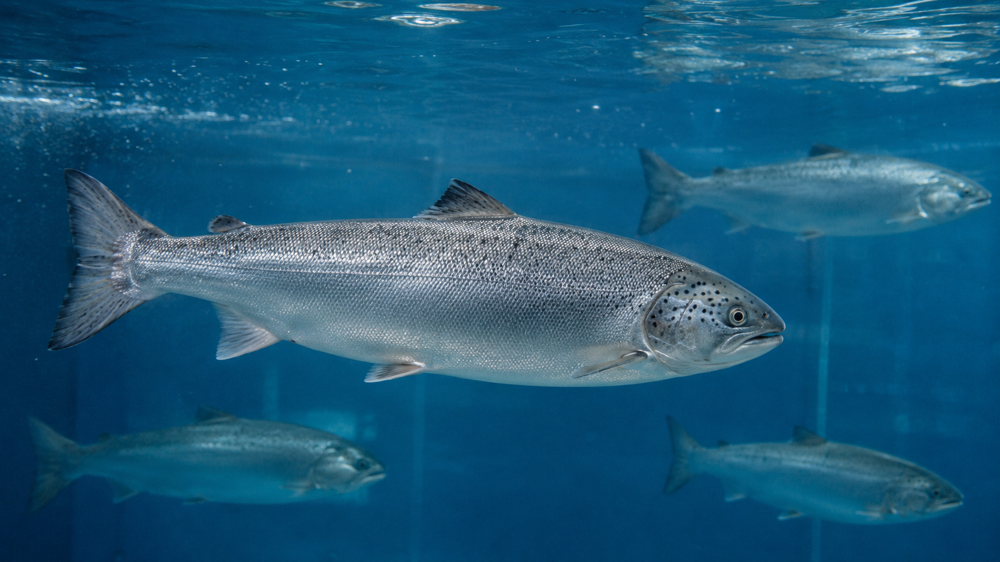

FISHERY & AQUACULTURE
水産施設の海水ラインを、施設全体のインフラとして整える。
SCOPE
漁港、市場、活魚水槽、加工場、養殖施設まで。
水産・養殖の現場では、海水供給、活魚水槽、洗浄ライン、配管、排水まわりが連動しています。UFB DUALは、大元配管や主要ラインに組み込み、施設全体へUFB水を届ける設計が可能です。
- 漁港・市場・荷さばき所の海水供給ライン
- 活魚水槽・畜養水槽・種苗施設
- 水産加工場・洗浄ライン・排水まわり
TOKUSHIMA CASE
徳島県・椿泊漁港の荷さばき所にも導入。
椿泊漁港の高度衛生管理型荷さばき所では、海水を供給する大元配管にUFB DUAL 100A海水対応仕様を設置。活魚水槽や洗浄ラインなどへ、UFBを含む海水を供給する仕組みとして採用されました。
導入事例を見る